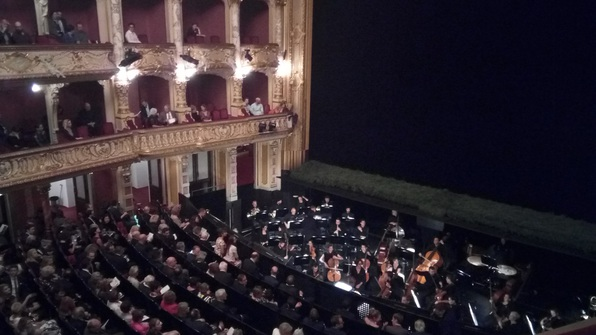
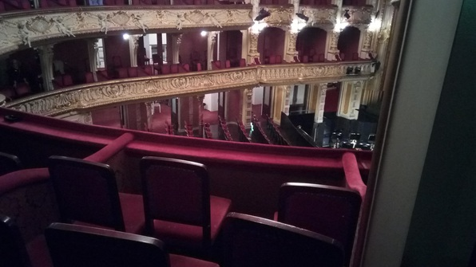

Morning mostly consumed by work! Meet Muriel in the morning for a fun English day :D We grab lunch, have some great conversation, end up talking about her high school friends, and finally end up tentatively planning some kind of bowling thing with her friends ;)
Take the bus to Quantum information, which is another complete mess of linear algebra! We’re starting to learn about quantum communications protocols, which are pretty legendary. Chat with Ramone a bit, do homework, then come back to Zentrum for my language class.
In the language class, we present a short radio quiz, which takes me back to my days in my voice acting class at Whatcom! Get back, grab Betty and go up to the roof to catch the sunset, which is amazing!
Then I find that Betty and Janna are about to go to the opera! In keeping with my current ethos, find out there are student tickets, throw on a nice shirt, toss my pasta into a container, and eat it on the walk with them to the opera, which is a Russian opera called “Onegin Jewgeni”.
The opera house is exactly like I pictured it from antiquated novels, with boxes that make one wish one had opera glasses to check out the society.
 
The opera is actually incredible! There’s a full orchestra, a huge cast of lavishly dressed and big-voiced players, and a set with amazing depth that has a floor of freshly cut grass that looked for the life of me like a Russian glade.
I could actually follow the plot, which was dramatic, fantastic but not fantastical. Amazing evening!
Walk back to Culmann discussing literature, drink some tea with Betty and eat a bit of her delicious eggy scramble, and hit the hay.